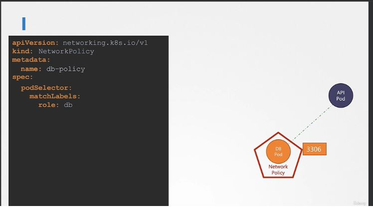
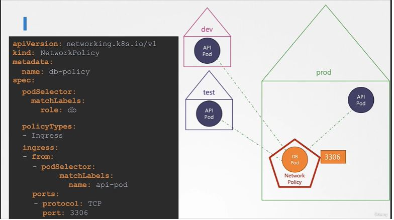
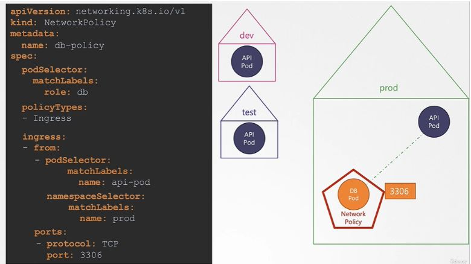
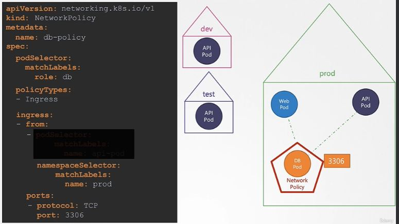
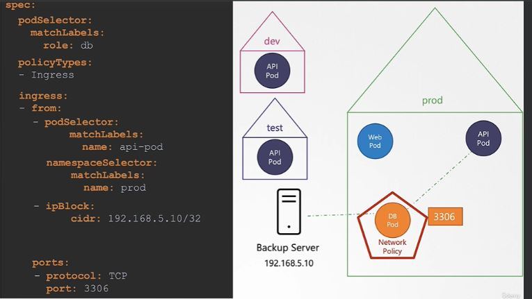
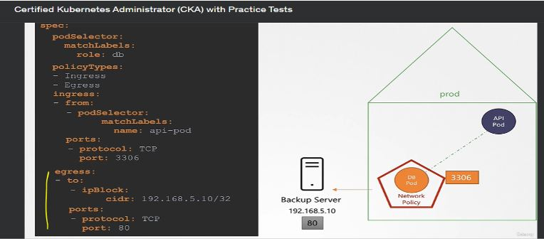
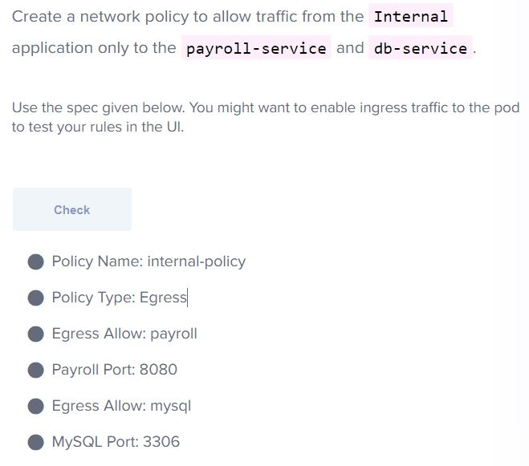
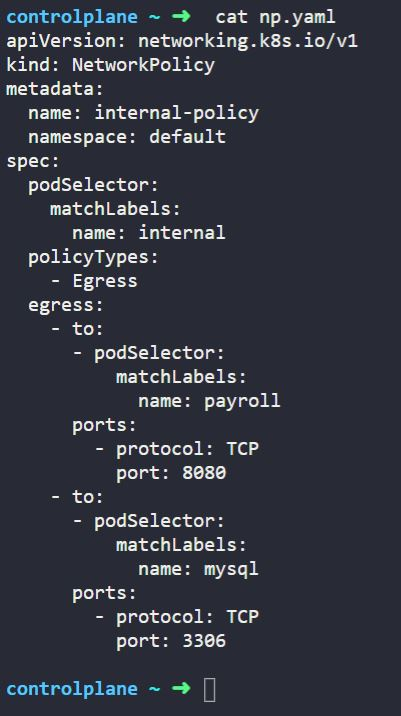

All connections are allowed for each pod in k8 to communicate with each other.
Ingress :Incoming connection to pod.
If we need a particular port to communicate with the pod , then we will write an ingress n/w policy , then all ingress communication will be blocked except the port which is defined.
And if suppose all egress communication is blocked from the pod still the outgoing communication for that port will be allowed.
This blocks out all traffic first as mentioned below in snip
Note that if a particular port is allowed on a pod then all the pod having label as role: db within cluster will communicate that particular pod like below port 3306 is only allowed for ingress so it is allowed for all pods which are located in different namespace with in the cluster.
But if we wants to keep the connection for the same name space where the dd pod is located then we need to specify the namespace as below
And if there is no podselector mentioned then it will allow all the pod within the namespace to communicate the db pod on port 3306 like below
Let say you have an backup server outside the k/8 cluster and wants to do ingress communication with DB pod , then we will allow the ip block in that case.
Egress: Outgoing connect from pod.
Let say we have Db pod which need communicate with external backup server, (where let say db pod has agent which communicate with backup server), so we will allow the egress traffic communication like below :
Egress more example -----------------------------------------------.
 